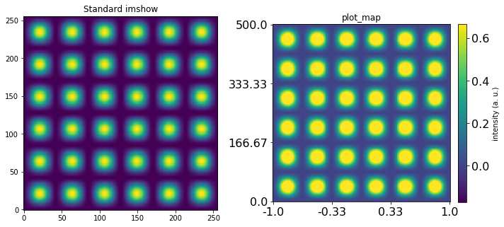
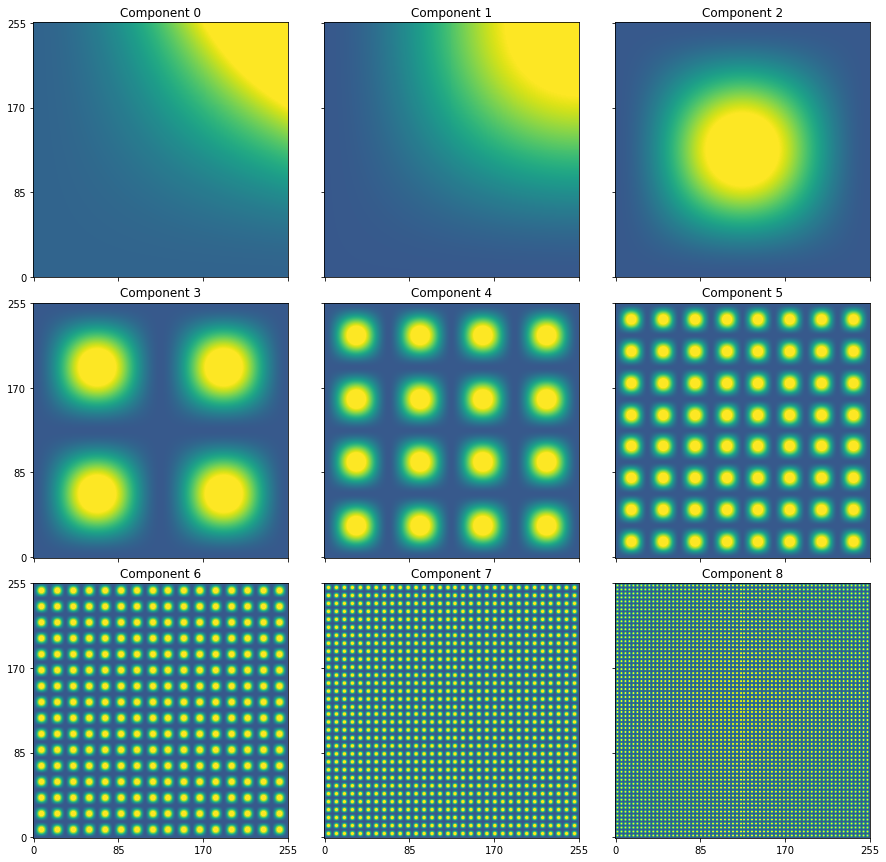
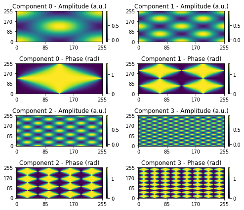

2D plotting utilities¶
Suhas Somnath
8/12/2017
This is a short walk-through of useful plotting utilities available in sidpy
Introduction¶
Some of the functions in sidpy.viz.plot_utils fill gaps in the default matplotlib package, some were developed for scientific applications, These functions have been developed to substantially simplify the generation of high quality figures for journal publications.
Table of contents:¶
plot_map
plot_map_stack
plot_complex_spectra
Import necessary packages:¶
[16]:
from __future__ import division, print_function, absolute_import, unicode_literals
import numpy as np
from warnings import warn
import matplotlib.pyplot as plt
import subprocess
import sys
def install(package):
subprocess.call([sys.executable, "-m", "pip", "install", package])
# Package for downloading online files:
try:
import sidpy
except ImportError:
warn('sidpy not found. Will install with pip.')
import pip
install('sidpy')
import sidpy
plot_map()¶
This function adds several popularly used features to the basic image plotting function in matplotlib including:
easy addition of a colorbar
custom x and y tick values
clipping the colorbar to N standard deviations of the mean
[17]:
x_vec = np.linspace(0, 6*np.pi, 256)
y_vec = np.sin(x_vec)**2
atom_intensities = y_vec * np.atleast_2d(y_vec).T
fig, axes = plt.subplots(ncols=2, figsize=(10, 5))
# Standard imshow plot for reference
axes[0].imshow(atom_intensities, origin='lower')
axes[0].set_title('Standard imshow')
# Now plot_map with some options enabled:
sidpy.viz.plot_utils.plot_map(axes[1], atom_intensities, stdevs=1.5, num_ticks=4,
x_vec=np.linspace(-1, 1, atom_intensities.shape[0]),
y_vec=np.linspace(0, 500, atom_intensities.shape[1]),
cbar_label='intensity (a. u.)', tick_font_size=16)
axes[1].set_title('plot_map')
fig.tight_layout()

plot_map_stack()¶
One of the most popular operations in scientific research is the visualization of a stack of images.
This function is built specifically for that purpose.
Here we simply simulate some images using sinusoidal functions for demonstration purposes.
[18]:
def get_sine_2d_image(freq):
x_vec = np.linspace(0, freq*np.pi, 256)
y_vec = np.sin(x_vec)**2
return y_vec * np.atleast_2d(y_vec).T
frequencies = [0.25, 0.5, 1, 2, 4 ,8, 16, 32, 64]
image_stack = [get_sine_2d_image(freq) for freq in frequencies]
image_stack = np.array(image_stack)
fig, axes = sidpy.viz.plot_utils.plot_map_stack(image_stack, reverse_dims=False, title_yoffset=0.95)

plot_complex_spectra()¶
This function plots the amplitude and phase components of a stack of complex valued 2D images.
Here we simulate the data using sine and cosine components
[19]:
def get_complex_2d_image(freq):
# Simple function to generate images
x_vec = np.linspace(0, freq*np.pi, 256)
y_vec_1 = np.sin(x_vec)**2
y_vec_2 = np.cos(x_vec)**2
return y_vec_2 * np.atleast_2d(y_vec_2).T + 1j*(y_vec_1 * np.atleast_2d(y_vec_1).T)
# The range of frequences over which the images are generated
frequencies = 2 ** np.arange(4)
image_stack = [get_complex_2d_image(freq) for freq in frequencies]
fig, axes = sidpy.viz.plot_utils.plot_complex_spectra(np.array(image_stack), figsize=(3.5, 3))
